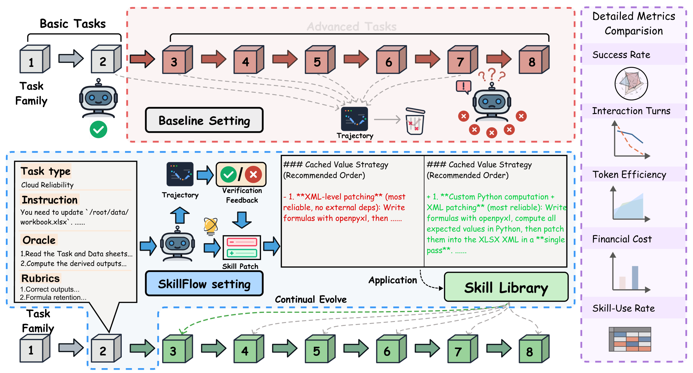
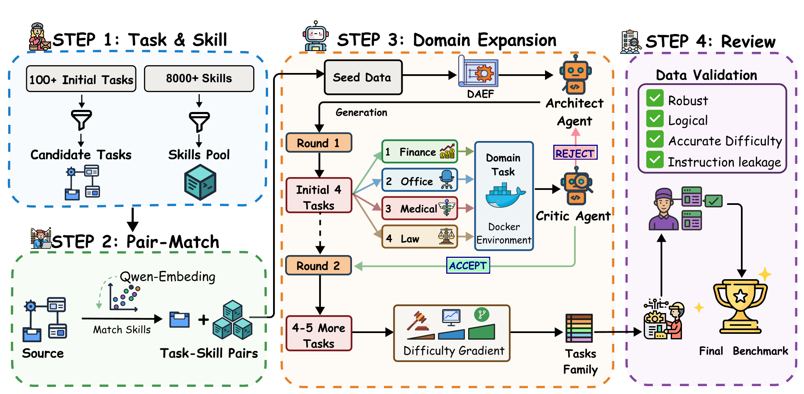
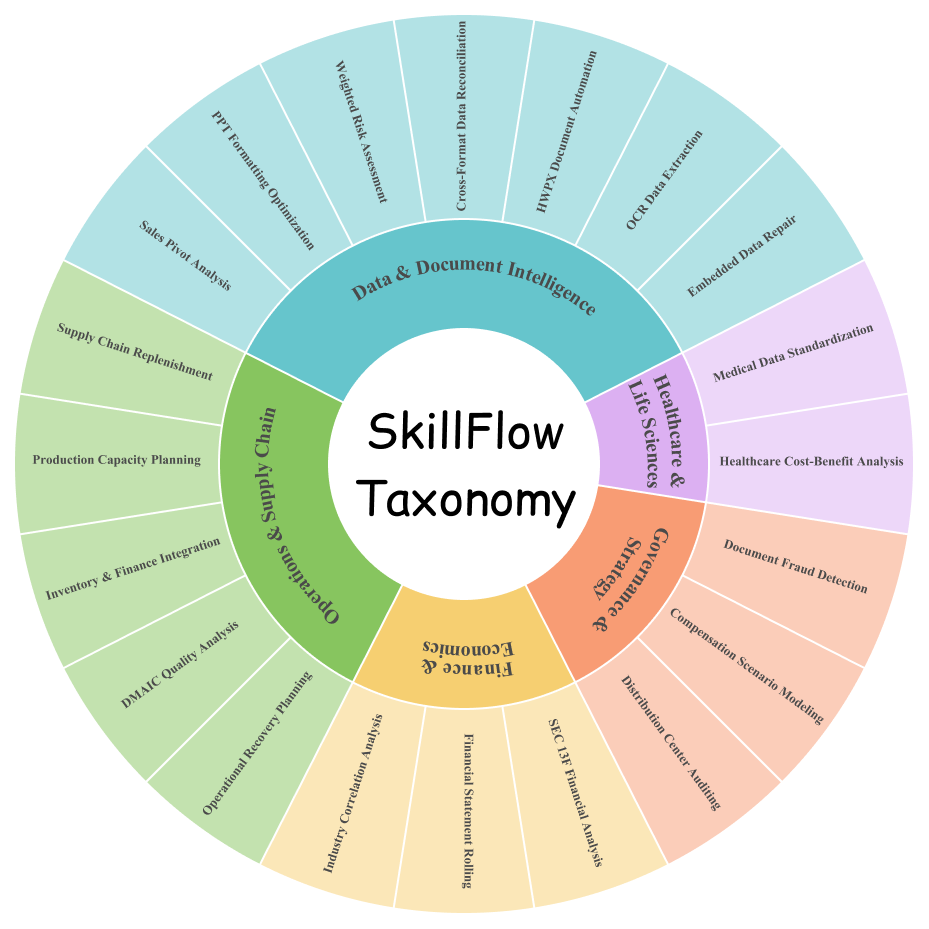
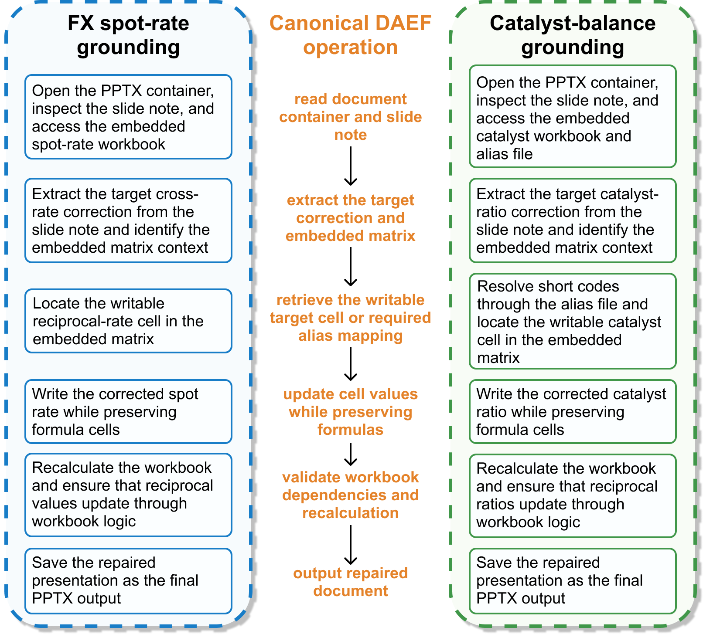

SkillFlow: Benchmarking Lifelong Skill Discovery and Evolution for Autonomous Agents
Why SkillFlow
Most agent benchmarks test whether a model can use a provided skill. SkillFlow asks a more realistic question: can an agent solve a task, externalize the lesson into a reusable artifact, patch that artifact after future failures, and carry the improved skill library forward across a sequence of related tasks?

Abstract
As the capability frontier of autonomous agents continues to expand, they are increasingly able to complete specialized tasks through plug-and-play external skills. Yet current benchmarks mostly test whether models can use provided skills, leaving open whether they can discover skills from experience, repair them after failure, and maintain a coherent library over time.
SkillFlow is a benchmark of 166 tasks across 20 families organized by shared Domain-Agnostic Execution Flow (DAEF), where each DAEF provides a workflow skeleton for systematic evaluation of cross-domain procedural transfer. Under the proposed Agentic Lifelong Learning protocol, agents begin without skills, solve tasks sequentially within each family, externalize lessons through trajectory- and rubric-driven skill patches, and carry the updated library forward.
Experiments reveal a clear but fragile abstraction gap. For Claude Opus 4.6, lifelong skill evolution improves task success from 62.65% to 71.08%. However, high skill usage does not necessarily imply high utility: Kimi K2.5 gains only 0.60 points despite 66.87% skill usage, and Qwen-Coder-next slightly regresses.
Benchmark Visuals
This page now uses the image assets directly, replacing PDF-style resource blocks with a cleaner visual layout for overview, construction, taxonomy, and workflow structure.



What SkillFlow Measures
The benchmark evaluates the full skill lifecycle rather than isolated tool use.
Skill Discovery
Can the agent distill reusable procedures from solved trajectories without external supervision?
Skill Patching
Can later failures revise an existing skill rather than create fragmented memories?
Cross-Task Transfer
Can learned procedures transfer across tasks that share the same workflow skeleton?
Library Maintenance
Can the evolving skill library stay compact, valid, and useful over time?
Main Experimental Results
Benchmark-level averages from the main paper table. Delta columns are rendered with directional symbols so it is easier to scan improvements and regressions at a glance.
| Agent | Model | Vanilla | Skills Evolve | Δ | |||||||||||
|---|---|---|---|---|---|---|---|---|---|---|---|---|---|---|---|
| %comp. | Turns | Cost | Out Tok. | %comp. | Turns | Cost | Out Tok. | #Skills | %use | %Comp. | Turns | Cost | Tok. | ||
| Claude Code | Claude Sonnet 4.5 | 49.4 | 25.04 | 0.293 | 1.07 | 55.42 | 24.88 | 0.246 | 0.85 | 2.55 | 72.89 | ▲ 6.02 | ▼ 0.16 | ▼ 16.04% | ▼ 20.56% |
| Claude Opus 4.5 | 58.43 | 18.83 | 0.571 | 1.5 | 60.84 | 18.31 | 0.384 | 1.4 | 1.5 | 60.84 | ▲ 2.41 | ▼ 0.52 | ▼ 32.87% | ▼ 6.67% | |
| Claude Sonnet 4.6 | 56.63 | 17.48 | 0.168 | 1.23 | 56.63 | 17.42 | 0.245 | 1.59 | 2.55 | 53.01 | • 0.00 | ▼ 0.06 | ▲ 45.83% | ▲ 29.27% | |
| Claude Opus 4.6 | 62.65 | 17.34 | 0.665 | 3.00 | 71.08 | 19.00 | 0.615 | 2.39 | 1.05 | 45.78 | ▲ 8.43 | ▲ 1.66 | ▼ 7.52% | ▼ 20.33% | |
| MiniMax M2.5 | 28.31 | 35.22 | 0.010 | 0.44 | 34.94 | 34.01 | 0.010 | 0.54 | 2.50 | 32.53 | ▲ 6.63 | ▼ 1.21 | • 0% | ▲ 22.73% | |
| MiniMax M2.7 | 37.35 | 25.44 | 0.012 | 0.5 | 36.75 | 27.42 | 0.017 | 0.96 | 4.6 | 51.2 | ▼ 0.60 | ▲ 1.98 | ▲ 41.67% | ▲ 92% | |
| Codex CLI | GPT 5.4 | 33.13 | 23.89 | 0.41 | 4.05 | 36.75 | 24.17 | 0.459 | 4.43 | 1.05 | 81.33 | ▲ 3.62 | ▲ 0.28 | ▲ 11.95% | ▲ 9.38% |
| GPT 5.3 Codex | 52.41 | 17.74 | 0.492 | 6.8 | 46.39 | 17.14 | 0.434 | 43.4 | 1.1 | 84.94 | ▼ 6.02 | ▼ 0.60 | ▼ 11.79% | ▲ 0.29% | |
| Qwen Coder | Qwen-Coder-Next | 45.18 | 18.64 | 0.103 | 9.74 | 44.58 | 19.91 | 0.113 | 10.69 | 5.45 | 12.05 | ▼ 0.60 | ▲ 1.27 | ▲ 9.71% | ▲ 9.75% |
| Qwen3-Coder-480B | 24.7 | 26.22 | 0.189 | 12.58 | 24.1 | 28.8 | 0.199 | 12.12 | 5.2 | 66.87 | ▼ 0.60 | ▲ 2.58 | ▲ 5.29% | ▼ 3.66% | |
| Kimi CLI | Kimi K2.5 | 55.42 | 12.62 | 0.103 | 7.31 | 56.02 | 11.51 | 0.104 | 7.10 | 1.50 | 66.87 | ▲ 0.60 | ▼ 1.11 | ▲ 0.97% | ▼ 2.87% |
Headline Findings
Strong gains exist, but they are not universal
Claude Opus 4.6 improves from 104/166 completed tasks to 118/166, showing that iterative skill evolution can materially improve real agent performance.
Usage does not equal utility
Some models frequently read skills yet gain little or even regress, revealing a gap between accessing a skill and integrating it into action planning.
Transfer is highly family-specific
Gains are largest when tasks share a stable reusable workflow skeleton and smaller when bottlenecks come from perception, OCR, or brittle formatting checks.
Failure modes remain an essential research target
Even with better completion, models still suffer from fragmentation, contamination, and utility-usage mismatch, showing that skill evolution is powerful but fragile.
Benchmark Design
- DAEF-structured families: tasks are grouped by shared workflow topology, not shallow domain overlap.
- Sequential evaluation: agents begin with an empty library and evolve skills family by family.
- Patch-based memory updates: lessons are written into explicit artifacts organized in a general-purpose skill structure.
- Docker-based closed evaluation: tasks run inside controlled containerized test environments, making skill transfer measurable under consistent execution constraints.
BibTeX
@article{zhang2026skillflow,
title={SkillFlow: Benchmarking Lifelong Skill Discovery and Evolution for Autonomous Agents},
author={Zhang, Ziao and Shi, Kou and Huang, Shiting and Zeng, Yu and Zhao, Yiming and Fang, Zhen and Chen, Zehui and Su, Qishen and Qiu, Haibo and Yang, Wei and Ren, Qingnan and Zou, Shun and Huang, Wenxuan and Chen, Lin and Zhao, Feng},
journal={arXiv preprint},
year={2026}
}